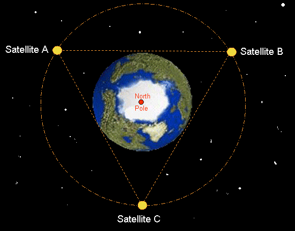

There are three satellites orbiting the Earth over the equator. They are equally spaced around a circular orbit. In the diagram below, you are looking down on the north pole of the Earth, with the equator running around the edge of the earth's disk. In order that any point on the equator is visible by at least one satellite, their positions form an equilateral triangle.
If the satellites are in the lowest orbit possible, the Earth is the incircle of the triangle, and the orbit is the circumcircle.
Assume the earth has a circumference of 24,000 miles.

In the problems below, online users can click 'check answer' to get an approximate answer to the problem. If using a printed copy, write your answer in the box.